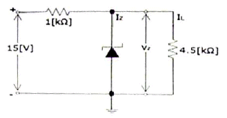
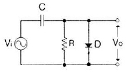
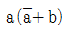
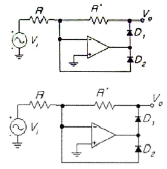
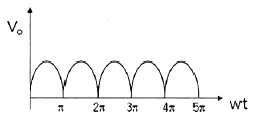
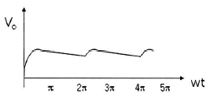
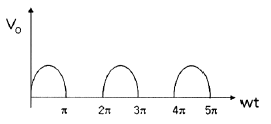
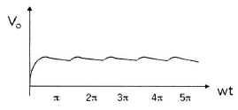
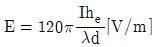

무선설비산업기사 (2011-03-13 기출문제)
1과목: 디지털 전자회로
1. 전원설비 중 정류기의 특성 변수 결정 방법으로 틀린 것은?
- 최대역전압 = 정류기의 다이오드에 걸리는 역방향 최대치
- 정류효율 = (출력 직류 전류 / 입력 교류 전류) ×100[%]
- 전압변동률 = z(무부하시의 출력전압 - 부하시의 출력전압) / 무부하시의 출력전압 2×100[%]
- 맥동률 = (출력 교류분 전압실효치 / 출력 직류분 전압평균치)×100[%]
(정답률: 86%)

2. 다음 정전압 회로에서 IZ는 얼마인가? (단, 제너전압(VZ)은 9[V]이다.)(오류 신고가 접수된 문제입니다. 반드시 정답과 해설을 확인하시기 바랍니다.)

- 3[mA]
- 4[mA]
- 5[mA]
- 6[mA]
(정답률: 34%)
3. 전원회로에서 부하에 최대전력을 공급하기 위해서는 어떻게 하여야 하는가?
- 전원 내부저항과 부하저항이 같아야 한다.
- 전원 내부저항보다 부하저항이 커야 한다.
- 전원 내부저항보다 부하저항이 작아야 한다.
- 전원 내부저항보다 부하저항이 크거나 작아야 한다.
(정답률: 79%)
4. N채널 JFET 증폭회로에서 드레인-소스 포화전류 IDSS=5[mA], 핀치오프 전압 VP=-2.5[V]일 때 드레인 전류 ID는? (VGS=-0.5[V]이다.)
- 1.5[mA]
- 3.2[mA]
- 4.0[mA]
- 5.0[mA]
(정답률: 64%)
5. 트랜지스터를 사용한 이상(phase shift) CR 발진기에서 발진을 지속하기 위해 트랜지스터의 증폭도는 최소 얼마 이상이어야 하는가?
- 10
- 29
- 100
- 156
(정답률: 72%)
6. 송신기의 완충증폭기(Buffer Amp)에 많이 쓰이는 증폭 방식은?
- A급
- B급
- C급
- AB급
(정답률: 84%)
7. 다음 증폭방식 중 효율이 가장 높은 증폭 방식은?
- A급
- B급
- AB급
- C급
(정답률: 90%)
8. 고주파 증폭회로에서 중화조정을 하는 목적은 무엇인가?
- 자기발진 방지
- 대역폭 증대
- 전력효율 증대
- 높은 이득
(정답률: 78%)
9. 다음 중 클랩(clapp) 발진기의 특징이 아닌 것은?
- 콜피츠 발진기를 변형한 것이다.
- 발진주파수가 안정하다.
- 발진주파수 범위가 작다.
- 발진출력이 크다.
(정답률: 78%)
10. 무선송신기에 수정진동자를 사용하는 이유로 가장 타당한 것은?
- 발진주파수가 안정하기 때문이다.
- 고조파를 쉽게 얻을 수 있기 때문이다.
- 일그러짐이 적은 파형을 얻기 위해서이다.
- 발진주파수를 쉽게 변경할 수 있기 때문이다.
(정답률: 81%)
11. 음성신호를 PCM 신호로 만들기 위해 샘플링을 하였다. 이때 엘리어싱(Aliasing)을 피하기 위해 샘플링 주파수를 최소한 얼마 이상으로 해야하는가? (단, 음성신호의 최고주파수는 4[kHz]이다.)
- 4[kHz]
- 8[kHz]
- 10[kHz]
- 12[kHz]
(정답률: 81%)
12. 펄스 파형의 상승 시간(rising time)을 바르게 정의한 것은?
- 최대 진폭의 10[%]에서 90[%]까지 상승하는데 걸리는 시간
- 최대 진폭의 5[%]에서 95[%]까지 상승하는데 걸리는 시간
- 최대 진폭의 15[%]에서 85[%]까지 상승하는데 걸리는 시간
- 최대 진폭의 0[%]에서 100[%]까지 상승하는데 걸리는 시간
(정답률: 91%)
13. 쌍안정 멀티바이브레이터 회로에서 저항에 병렬로 접속된 콘덴서의 주요 목적은?
- 증폭도를 높이기 위해
- 스위칭 속도를 높이기 위해
- 베이스 전위를 일정하게 하기 위해
- 이미터 전위를 일정하게 하기 위해
(정답률: 86%)
14. 직렬형 다이오드 슬라이서 회로 구성 중 쌍으로 존재하는 것이 아닌 것은?
- 다이오드
- 저항
- 교류전원
- 직류전원
(정답률: 67%)
15. 다음 그림과 같은 회로의 명칭으로 적합한 것은?

- Clipping Circuit
- Clamping Circuit
- Slicer Circuit
- Limiter Circuit
(정답률: 71%)
16. 0~9까지의 10진수를 BCD 부호 또는 2진수로 변환하고자 할 때 사용할 수 있는 회로는 다음 중 어느 것인가?
- 디코더
- 인코더
- 멀티플렉서
- 디멀티플렉서
(정답률: 73%)
17. 8421코드 0100 0010 0001의 10진수 값은?
- 521
- 421
- 321
- 221
(정답률: 89%)
18. 부울 대수

를 간단히 하면?- a
- ab
- a+b
- b
(정답률: 65%)
19. 10개의 플립플롭이 +5[V] 직류전원에서 동작하고 25[mA]의 전류가 흐른다면 전력소모량은 다음 중 얼마인가?
- 125[mW]
- 250[mW]
- 1.25[W]
- 2.5[W]
(정답률: 69%)
20. 다음 중 NAND 게이트를 이용한 RS-래치(latch) 회로의 진리값으로 옳은 것은?
- 입력 R=0, S=1일 때 출력 Q=0, Q'=0
- 입력 R=1, S=1일 때 출력 이전 상태 유지(불변)
- 입력 R=1, S=0일 때 출력 Q=0, Q'=1
- 입력 R=1, S=1일 때 출력 부정
(정답률: 69%)
2과목: 무선통신 기기
21. 일반적인 무선 송ㆍ수신기용 발진기의 조건 중 거리가 먼 것은?
- 주파수 안정도가 높을 것
- 발진출력이 안정적일 것
- 고주파 발생이 적을 것
- 발진출력의 일그러짐이 최소가 될 것
(정답률: 75%)
22. 주파수 스펙트럼이 1개의 측파대를 가지며 피변조파에 반송파가 포함되지 않는 진폭 변조 방식을 무엇이라 하는가?
- DSB(Double Side Band)
- SSB(Single Side Band)
- VSB(Vestigial Side Band)
- BSB(Bipolar Side Band)
(정답률: 72%)
23. 주파수 변조(FM)에 대한 설명 중 틀린 것은?
- AM 통신 방식보다 품질이 우수하다.
- 선형 변조 방식에 속한다.
- 각변조 방식의 일종이다.
- 변조 신호를 가지고 반송파의 주파수를 변화시키는 방식이다.
(정답률: 71%)
24. FM 송신기에서 최대 주파수편이가 규정치를 넘지 않도록 음성신호 등의 진폭을 일정하게 제한하는 회로는?
- AFC 회로
- IDC 회로
- Squelch 회로
- Limiter 회로
(정답률: 76%)
25. 데이터 전송속도는 느리고, 시스템의 효율이 낮으나 잡음에 강한 모뎀의 전송방식은?
- ASK
- FSK
- PSK
- QAM
(정답률: 64%)
26. 정지위성에 장착하는 안테나가 갖추어야 할 조건으로 적합하지 않은 것은?
- 고이득일 것
- 저잡음일 것
- G/T가 작을 것
- 광대역성일 것
(정답률: 85%)
27. 위성 중계기를 여러 지구국이 공유를 위한 방법으로 통신 영역을 분리하여 한정된 제원을 반복하여 이용하는 방식은?
- SDMA
- TDMA
- FDMA
- CDMA
(정답률: 75%)
28. 지상으로부터 약 36,000[km]에 위치하여 지구의 자전주기와 위성의 공전주기를 같게하여 적도상에 같은 간격으로 3개 정도를 배치하여 전 세계를 커버할 수 있는 경제적인 위성 통신을 할 수 있는 방식은?
- 랜덤 위성 방식
- 정지 위성 방식
- 위상 위성 방식
- 다중 위성 방식
(정답률: 86%)
29. Walsh Code에 의해 확산된 신호는 변조하기 전에 I, Q 채널에 각각의 short PN 코드를 곱하게 되는데 QPSK 변조에서 이 목적은 무엇인가?
- 호의 설정 과정으로 동기를 맞추기 위해
- 셀과의 간격을 확인하기 위해
- 변조된 신호 순서를 맞추기 위해
- 기지국과 섹터를 구분하기 위해
(정답률: 79%)
30. 다음 중 스펙트럼 확산변조의 종류가 아닌 것은?
- 직접확산 변조방식
- 주파수도약 변조방식
- 주기도약 변조방식
- 펄스화 주파수 변조방식
(정답률: 61%)
31. 부동충전방식의 특징에 대한 설명 중 적합하지 않은 것은?
- 축전지의 충ㆍ방전 전기량이 적어 수명이 짧아진다.
- 전화국 전원 등에 많이 이용된다.
- 축전지의 용량이 비교적 적어도 된다.
- 부하에 대한 전압변동이 적고 직류출력 전압이 안정하다.
(정답률: 80%)
32. 다음 중 전력변환 장치의 종류를 나타낸 것은?
- 변조기(modulator)와 복조기(demodulator)
- 정류기(rectifier)와 발전기(generator)
- 인버터(inverter)와 컨버터(converter)
- 전원공급기(power supply)와 발진기(oscillator)
(정답률: 92%)
33. 수신기에서 이득이 13[dB], 잡음지수가 1.3[dB]인 증폭기 후단에 이득이 10[dB], 잡음지수가 1.5[dB]인 증폭기가 있다. 이 수신기의 종합잡음지수는 약 몇 [dB]인가?
- 1.30[dB]
- 1.34[dB]
- 1.85[dB]
- 2.25[dB]
(정답률: 64%)
34. 다음 중 FM 송신기의 전력을 측정하는 방법으로 적당한 것은?
- 의사공중선에 의한 전력측정
- 수부하에 의한 전력측정
- 양극손실에 의한 전력측정
- 볼로미터 브리지에 의한 전력측정
(정답률: 77%)
35. FM 수신기의 선택도 측정을 2개 이상의 신호를 수신기에 동시에 인가하여 ( ), ( ), ( )을 측정한다. 괄호 안에 들어갈 내용으로 적당하지 않은 것은?
- 감도억압효과 특성
- 혼변조 특성
- 상호변조 특성
- 주파수안정도 특성
(정답률: 84%)
36. 전송로의 진폭왜곡이나 위상왜곡에 의해 발생하는 부호간 간섭의 영향을 감소시킴으로써 주파수 특성 변형을 고르게 보정해주는 것은?
- 등화기
- 대역 여파기
- 진폭 제한기
- 정합필터
(정답률: 86%)
37. 다음 중 전송선로의 정합상태를 나타내는 것은?
- 정재파비
- 가변 임피던스
- 스미스 도표
- 특성 임피던스
(정답률: 88%)
38. 다음 회로의 출력파형으로 가장 알맞은 것은? (Vi = Vm sin(wt))(문제 오류로 실제 시험에서는 모두 정답처리 되었습니다. 여기서는 가번을 누르면 정답 처리 됩니다.)





(정답률: 77%)
39. 연축전지를 과도한 방전상태로 오랫동안 방치하면 축전지를 더 이상 사용할 수 없게 되는 이유는?
- 전해액의 비중이 너무 낮아졌기 때문에
- 극판에 영구적인 황산납이 형성되기 때문에
- 황산이 물로 변했기 때문에
- 극판에 영구적인 산화납이 형성되기 때문에
(정답률: 80%)
40. 직선 검파기에서 Diagonal clipping이 발생하는 이유는?
- 직선 검파 외의 출력이 너무 크기 때문에
- 평균 검파기의 부하에 저항만 접속되어 있기 때문에
- 검파 회로의 시정수가 너무 크기 때문에
- 직선 검파기의 출력에 직류 성분이 포함되어 있기 때문에
(정답률: 70%)
3과목: 안테나 개론
41. 유전체에서 발생하는 변위전류에 대한 설명으로 옳은 것은?
- 변위전류의 크기는 일정 전속밀도의 경우 시간적 변화가 적을수록 커진다.
- 분극 전하밀도의 시간적 변화에 따라 발생한다.
- 전속밀도의 공간적 변화를 나타내는 용어이다.
- 전류의 크기가 유전체의 크기에 따라 변화되는 전류를 말한다.
(정답률: 59%)
42. 다음 중 원거리 통신 이용에 적합한 것은 어느 성분인가?
- 정전계
- 유도계
- 복사계
- 저항계
(정답률: 83%)
43. 다음 중 정재파비의 의미로 맞는 것은?
- 급전선로 상에서 인덕턴스 값의 최대와 최소의 비
- 급전선로 상에서 커패시턴스 값의 최대와 최소의 비
- 급전선로 상에서 임피던스 값의 최대와 최소의 비
- 급전선로 상에서 전압 값의 최대와 최소의 비
(정답률: 53%)
44. 선로1과 선로2의 결합 부분에서 반사계수가 0.7이다. 이때 결합부분에서의 손실을 [dB]로 표현하면 가장 근사한 값은 얼마인가?
- 0.3[dB]
- 1.5[dB]
- 3[dB]
- 6[dB]
(정답률: 70%)
45. 임피던스 정합을 위한 방법의 하나로 λ/4 변환기를 이용해서 복소 부하 임피던스 선로를 실수 임피던스로 변환하여 정합을 할 수 있다. 이때 실수 부하 임피던스로 변환하기 위한 방법으로 활용되는 것이 아닌 것은?
- 직렬 리액티브 스터브를 적절히 사용한다.
- 병렬 리액티브 스터브를 적절히 사용한다.
- 부하와 변환기 사이의 길이를 적절히 조정한다.
- 공동 공진기를 부착한다.
(정답률: 72%)
46. 평형ㆍ불평형 변환회로(Balun)에 LPF(저역통과필터)와 HPF(고역통과필터)를 사용하는 정합회로와 관련이 없는 것은?
- 정전 차폐형
- ±90°이상 회로에 의한 정합
- 위상 변환형
- 격자형, 사다리형, 위상 반전형
(정답률: 50%)
47. 스페르토프(sperrtopf)형 Balun의 경우 불평형 전류가 흘러 들어오는 것을 저지하기 위한 평행선로 쪽에서 접속점을 본 임피던스는 얼마가 되도록 설계되어야 하는가?
- ∞(무한대)
- 0
- 1
- 100
(정답률: 78%)
48. 공중선에 직렬로 삽입하는 공중선 부하 코일(loading coil)의 기능은?
- 등가적으로 공진파장의 연장
- 등가적으로 공진파장의 단축
- 등가적으로 공진주파수의 증가
- 등가적으로 공진주기의 억제
(정답률: 84%)
49. 입력전력이 10[W], 효율이 80[%]인 안테나의 최대 복사 방향으로 10[km] 지점에서 전계강도가 10[mV/m]이었을 때, 이 안테나의 상대이득은?
- 7.4
- 8.4
- 15.5
- 25.5
(정답률: 58%)
50. 안테나에 반사기를 붙이면 어떤 효과가 나타나는가?
- 급전선과의 정합이 용이하다.
- 광대역 특성이 얻어진다.
- 지향성을 갖도록 만들 수 있다.
- 접지 저항이 작아진다.
(정답률: 62%)
51. 베르니-토시 공중선의 특징 중 틀린 것은?
- 루프 공중선을 회전시키기 않고 고니오미터의 탐색코일을 회전함으로써 전파의 도래방향을 측정할 수 있다.
- 탐색(수색, 회전, 가동) 코일을 회전시켜 8자형 지향특성을 나타낸다.
- 평형형 동조급전선을 사용하기 때문에, 임피던스 정합회로는 필요없다.
- 단일방향을 결정하기 위하여 수직 공중선이 필요하며, 감도 0일 때 탐색코일 회전각의 직각방향이 전파의 도래방향이다.
(정답률: 62%)
52. End fire helical 안테나의 특징으로 올바른 것은?
- 이득이 낮다.
- 반사파가 존재한다.
- 단향성을 갖는다.
- HF대에 이용된다.
(정답률: 58%)
53. 지표파의 성질 중에서 잘못된 것은?
- 주파수가 높을수록 전파의 감쇠는 크다.
- 안테나의 지상고가 높을수록 지표파 성분이 적다.
- 수평편파가 수직편파보다 감쇠가 많다.
- 대지의 도전율과 유전율에 영향을 받지 않는다.
(정답률: 82%)
54. 다음 중 지상파의 장ㆍ중파대에서의 주가 되는 전파는?
- 회절파
- 대지 반사파
- 직접파
- 지표파
(정답률: 74%)
55. 지표파에 관한 설명으로 옳지 않은 것은?
- 대지가 완전 도체라고 할 때 전계강도는

이다. - 유전율이 작을수록 감쇠가 적어진다.
- 지표에 가까운 곳에서는 전파의 진행속도가 늦어진다.
- 수평편파 쪽이 감쇠가 적다.
(정답률: 73%)
56. 마이크로파대의 통신망에 있어서 특히 문제되는 페이딩(fading)은 어느 형인가?
- k형
- 신틸레이션형
- 선택형
- 덕트(duct)형
(정답률: 88%)
57. 다음 중 전리층에 대한 설명 중 틀린 것은?
- 자외선이 강할수록 전리 현상이 크게 일어난다.
- 굴절, 반사, 산란, 감쇠 및 편파 등이 있다.
- 공기분자가 적을수록 전리현상이 크게 일어난다.
- 태양 에너지가 강한 주간에는 F층이 F1, F2 층으로 구분된다.
(정답률: 86%)
58. 다음 중 제1종 감쇠의 설명으로 틀린 것은?
- 사용주파수 f의 제곱에 비례한다.
- 전자밀도 n에 비례한다.
- 평균충돌 횟수 즉 대기압에 거의 비례한다.
- 굴절률에 반비례한다.
(정답률: 65%)
59. 다음 중 전리층 전파에서 발생하는 페이디잉 아닌 것은?
- 편파성 페이딩
- 흡수성 페이딩
- 감쇠형 페이딩
- 간섭성 페이딩
(정답률: 59%)
60. 다음 중 대기 잡음이 아닌 것은?
- 공전 잡음
- 침적 잡음
- 온도 잡음
- 전류 잡음
(정답률: 84%)
4과목: 전자계산기 일반 및 무선설비기준
61. 인터럽트 구동 입출력 방식에 관한 설명 중 맞는 것은?
- 프로그램에 의한 입출력 방식보다 비효율적이다.
- MPU의 능동적인 관여가 요구된다.
- 오디오 등 동화상을 포함하는 대량 데이터를 고속으로 전송하는 경우 유리하다.
- MPU의 속도와 무관하게 비동기적으로 동작한다.
(정답률: 60%)
62. 입출력장치와 메모리 사이의 데이터 전송시 가장 빠른 방식은?
- 프로그램 I/O 방식
- 인터럽트 I/O 방식
- 시리얼 I/O 방식
- DMA 방식
(정답률: 84%)
63. 입출력 포트의 종류 중 병렬 포트(Parallel Port)가 아닌 것은?
- USB
- FDD
- HDD
- CD-ROM
(정답률: 85%)
64. 논리적 저장 순서가 필요 없으므로 데이터 저장시 연속된 공간이 필요없는 데이터 구조는?
- array 구조
- Binary Tree 구조
- 계층 구조
- linked linear list 구조
(정답률: 66%)
65. 공집합이 아닌 정점 또는 노드의 집합 V와 두 정점을 연결하는 간선(edge)들의 집합 E로 구성되는 데이터 구조는?
- 연접 리스트(dense list)
- 트리(tree)
- 그래프(graph)
- 스택(stack)
(정답률: 60%)
66. 구조적 프로그램의 기본 구조가 아닌 것은?
- 순차(sequence) 구조
- 조건(condition) 구조
- 반복(repetition) 구조
- 일괄(batch) 구조
(정답률: 77%)
67. 운영체제 기능 중 파일관리에 대한 설명으로 틀린 것은?
- 디렉토리 계층구조(hierarchical directory structure)의 개념으로 사용한다.
- 지정된 파일에 대해 우연히 또는 고의로 적절치 못한 접근이 있을 경우 이를 금지하는 개념으로 사용한다.
- 파일 시스템 구조는 논리적 구조와 물리적 구조로 구분된다.
- 다중-사용자 시스템에서 시스템에 저장되어 있는 모든 파일들은 사용자 소유가 된다.
(정답률: 70%)
68. 다음 중 성격이 다른 프로그램은 무엇인가?
- 감시 프로그램
- 작업제어 프로그램
- 데이터관리 프로그램
- 언어번역 프로그램
(정답률: 83%)
69. 다음 중 프로세서의 상태를 나타내는 플래그가 아닌 것은?
- N(negative)
- Z(Zero)
- B(Branch)
- C(Carry)
(정답률: 77%)
70. 대부분의 마이크로프로세서가 사용하는 숫자 체계는 무엇인가?
- 1's complement
- 2's complement
- sign-magnitude
- signed-digit
(정답률: 67%)
71. 허가나 신고로 개설하는 무선국에서 이용할 특정 주파수를 지정하는 것을 무엇이라 하는가?
- 주파수 할당
- 주파수 분배
- 주파수 지정
- 주파수 용도
(정답률: 84%)
72. 주파수의 이용현황의 조사ㆍ확인은 얼마의 기간마다 실시하는가?
- 매년
- 2년
- 3년
- 5년
(정답률: 81%)
73. 방송통신위원회가 전파자원의 공평하고 효율적인 이용을 촉진하기 위하여 시행하여야 할 사항과 다른 것은?
- 주파수 분배의 변경
- 이용실적이 저조한 주파수의 활용촉구
- 새로운 기술방식으로의 전환
- 주파수의 공동사용
(정답률: 60%)
74. 무선국 허가신청시의 심사기준과 틀린 것은?
- 무선설비가 기술기준의 적합할 것
- 주파수 분배 및 할당의 회수 또는 재배치가 가능할 것
- 무선종사자의 배치계획이 자격ㆍ정원배치 기준에 적합할 것
- 무선국 개설조건에 적합할 것
(정답률: 70%)
75. 다음 중 전자파 인체보호기준에 관한 용어의 정의가 틀린 것은?
- “전자기장”이라 함은 전기장과 자기장의 총칭을 말한다.
- “전기장”이라 함은 전하에 의해 변화된 그 주위의 공간상태를 말한다.
- “전기장강도”라 함은 전기장 내의 한 점에 있는 단위 음전하에 작용하는 힘을 말한다.
- “전력밀도”라 함은 전자파의 진행방향에 수직인 단위면적을 통과하는 전력을 말한다.
(정답률: 60%)
76. 한국방송통신전파진흥원은 국가기술자격시험 종료 후, 며칠 이내에 합격자에게 통지하여야 하는가?
- 7일
- 10일
- 15일
- 30일
(정답률: 75%)
77. 무선설비의 적합성평가 처리 방법 중 연속동작시험 조건으로 틀린 것은?
- 통상의 사용조건으로 8시간 동작시켰을 때
- 통상의 사용조건으로 24시간 동작시켰을 때
- 통상의 사용조건으로 48시간 동작시켰을 때
- 통상의 사용조건으로 500시간 동작시켰을 때
(정답률: 78%)
78. 다음 중 경보자동전화 장치에서 무선전화 경보신호를 구성하는 음의 주파수 편차와 음의 길이 오차는 얼마 이내이어야 하는가?
- ±1[%] 이내, ±0.5초 이내
- ±1.5[%] 이내, ±0.5초 이내
- ±1.5[%] 이내, ±0.⑤초 이내
- ±2[%] 이내, ±0.5초 이내
(정답률: 48%)
79. 디지털 TV 방송국 송신설비의 공중선전력 허용편차는?
- 상한 5[%], 하한 5[%]
- 상한 5[%], 하한 10[%]
- 상한 10[%], 하한 20[%]
- 상한 10[%], 하한 15[%]
(정답률: 66%)
80. 전파형식이 C3F, C9F 등인 텔레비전 방송을 하는 방송국의 무선설비의 점유주파수대폭 허용치는?
- 6[MHz]
- 60[Hz]
- 10[MHz]
- 100[Hz]
(정답률: 70%)